How-to guide for volunteers · Overlay Studio 0.4.0 · ProPresenter 7 / 20
Run a game night with Overlay Studio and ProPresenter
A five-team scoreboard, a prize wheel, score effects and sounds, all dropped on top of your ProPresenter slides and run from a phone. No design skills needed: the Game Night project is ready the moment you open the app.
A Mac running macOS 13 or newer. Overlay Studio and ProPresenter can run on the same Mac or on two Macs on the same network.
ProPresenter 7 or newer (these steps were checked against Renewed Vision's documentation for ProPresenter 20).
Optional: a phone or iPad on the same Wi-Fi as the Mac, to run the game from the room.
Optional: your own sound effects (wav, mp3, ogg or flac files).
How it works in one sentenceOverlay Studio draws the scoreboard with a see-through background and sends it over your network as an NDI video source; ProPresenter receives that source as a Video Input and shows it over your slides.
Open the DMG and drag Overlay Studio into Applications.
Open it. If macOS says it cannot verify the app, right-click the app, choose Open, then Open again. You only do this once.
If macOS asks to allow local network access, click Allow. NDI and the phone remote need it.
The app opens on a ready-made project called Game Night: five teams, five layouts, a clock and a prize wheel.
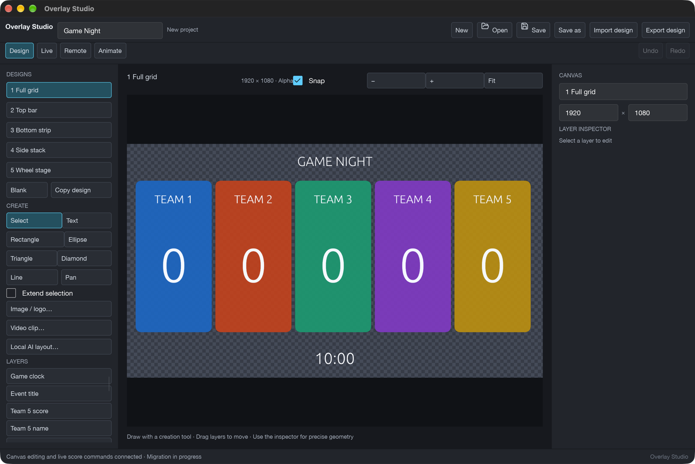
The Design tab. You do not need it on game night; the five layouts are already built.
3. Name your teams
Click the Live tab, then Game setup (it becomes Finish setup).
For each team change the Label (the name shown on screen), pick a Team color, and check the Steps (the score buttons, for example -1, 1, 2, 3).
Click Finish setup. Team colors recolor all five layouts at once.
Choose Save as and keep the file, for example Friday Game Night.overlay, so you can reopen it next time.
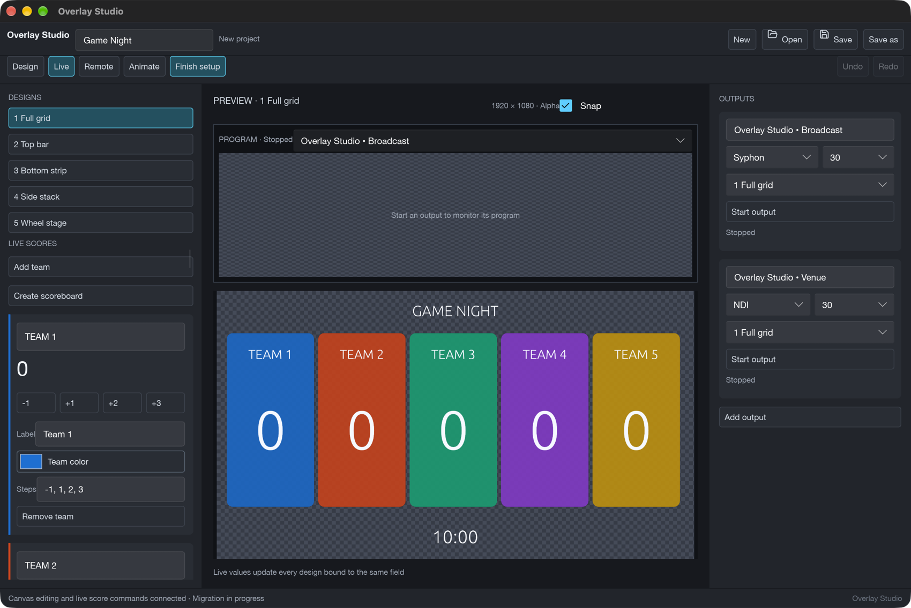
Game setup: label, color and score steps for each team.
4. Start the NDI output
An output is a channel that sends the picture out of Overlay Studio. You will start one as NDI.
In Live, look at the Outputs column on the right. The first output is Overlay Studio • Broadcast. Change its protocol dropdown from Syphon to NDI.
Check the layout dropdown (for example 1 Full grid), then click Start output. The status changes from Stopped to sending.
Click Take design to put the chosen layout on the output.
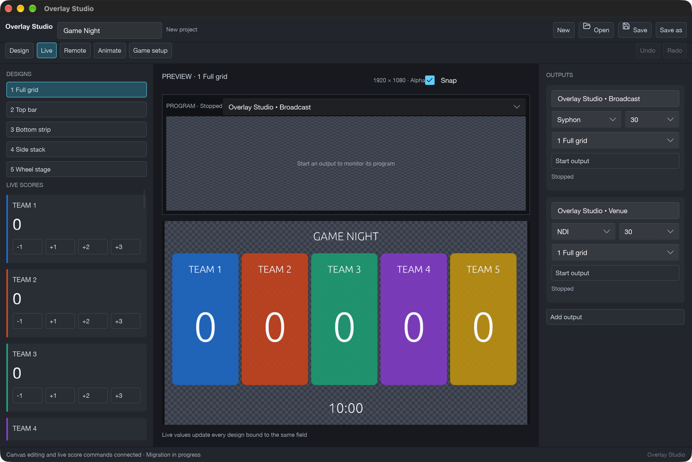
The Live tab: layouts on the left, preview in the middle, outputs on the right.
Why the first output?The phone's Show… buttons always switch the first output. If you leave that one on Syphon and send NDI from the second output (Overlay Studio • Venue), the phone will change a layout ProPresenter is not receiving. Using the first output for NDI avoids this.
Hide sends a fully see-through picture without stopping the output. It is the quick way to clear the scoreboard from the screens.
5. Bring it into ProPresenter
Do this once, then every game night only needs steps 4 and 6.
Add the input
Leave Overlay Studio's NDI output running.
In ProPresenter open ProPresenter › Settings › Inputs and choose the Video Inputs tab.
Click + above Add Video Input.
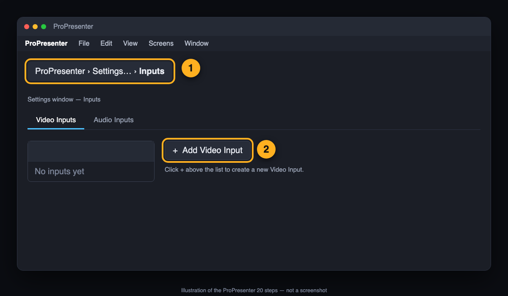
Settings › Inputs › Video Inputs. (Illustration of the steps, not a screenshot of ProPresenter.)
Select the new input, open the Device dropdown and choose the Overlay Studio • Broadcast NDI source. Its name usually starts with your Mac's name.
A live preview of the scoreboard should appear. If it asks for a resolution and frame rate, choose 1920×1080 and 30.
Give it a name you will recognize, such as Overlay Studio.
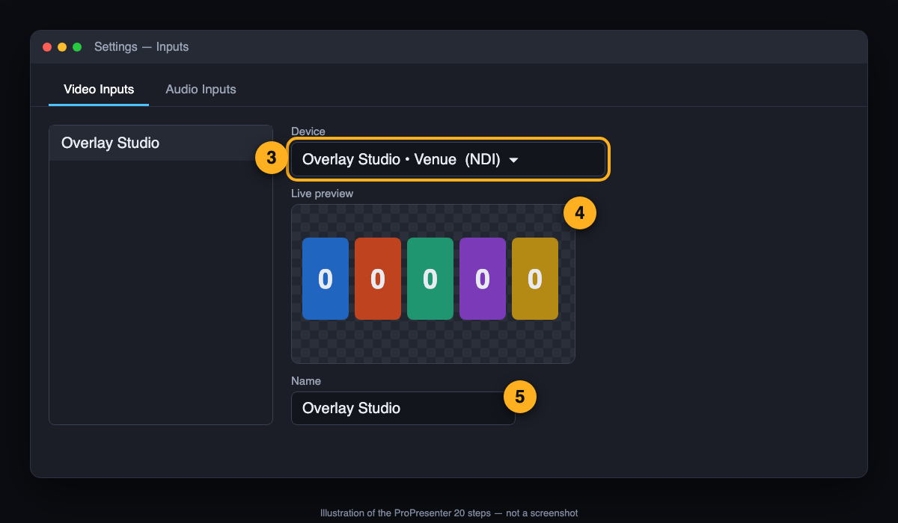
Pick the Overlay Studio NDI source and check the live preview. (Illustration.)
Source not in the list?Same Mac for both apps: open the NDI Input Discovery settings in ProPresenter and turn on Show Sources running on the local machine. Separate Macs: make sure both are on the same network and subnet. More in If something goes wrong.
Show it on the screens
In the Media Bin open the Video Input Playlist and click Overlay Studio. Your scoreboard appears on the audience screens.
You can also add it as a Video Input Action on a slide or macro, or as a Video Input element in the Slide Editor, so it appears when you click that slide.
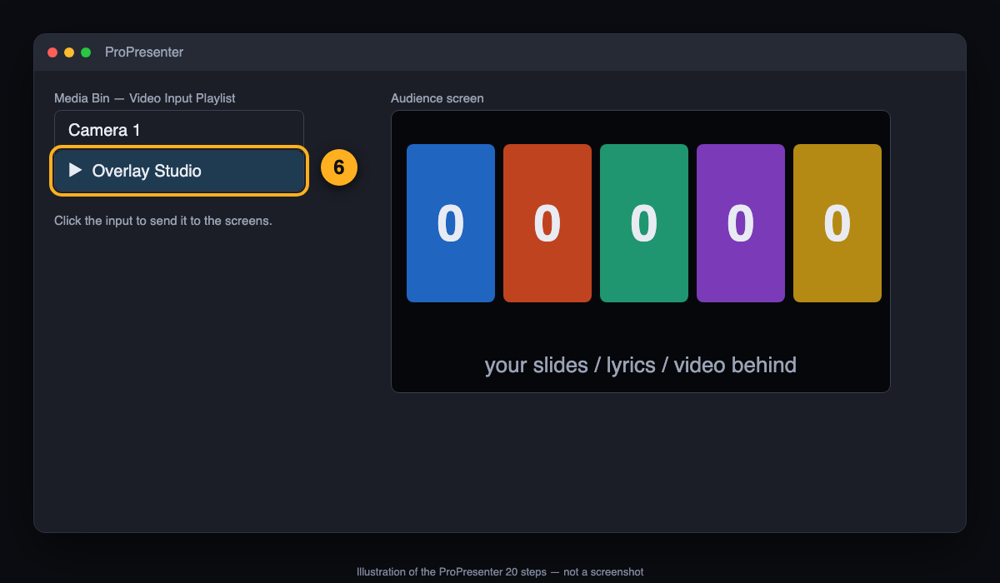
Trigger the input from the Video Input Playlist. (Illustration.)
Layering: rehearse this onceProPresenter draws a Video Input on its own Video Input layer, which sits below the Slide layer. A slide with a background or text can cover it. For a scoreboard that sits on top of slides, put it on the slide as a Video Input element (Slide Editor) or use slides without a background, and run through it before the event. Renewed Vision describes the layers in ProPresenter Output Layers.
Edges look dark or fringed?Overlay Studio sends see-through areas (alpha). If you see a dark outline, open the input in Settings › Inputs and untick Premultiplied for that input (see Renewed Vision's Premultiplied and Straight Keying).
6. Run the night
All of this happens in Overlay Studio's Live tab.
Pick a layout
Click a layout under Designs, then Take design to put it on the output. Or use the Show… buttons on the phone.
Layout
Use it when
1 Full grid
Introductions and the big reveal: all five teams, large scores and the clock.
2 Top bar
During a round, keeping the middle of the screen free for questions or video.
3 Bottom strip
Lyrics, trivia slides or video above, scores along the bottom.
4 Side stack
Slides on the right, scores stacked down the left.
5 Wheel stage
The prize wheel in the middle with team scores along the bottom.
Keep score and time
Under Live scores every team has buttons (for example -1+1+2+3). Click once per change; the number updates on screen at once.
Under Clocks use Start, Reset and the −10s+10s+60s buttons for the game clock.
A wrong click? Use Undo at the top right.
7. The prize wheel
In Live scroll the left column to Wheel. Type your choices into Entries, one per line (it starts with ideas like Trivia round and Charades).
Click 5 Wheel stage, then Take design.
Click Spin. The wheel turns, slows and lands; the winner's name shows above it.
Click Remove winner to take that entry off so it cannot be picked twice. Restore original list puts every entry back.
Under the buttons you can change the Pointer style, Slices style, Palette, spin time in seconds and confetti.
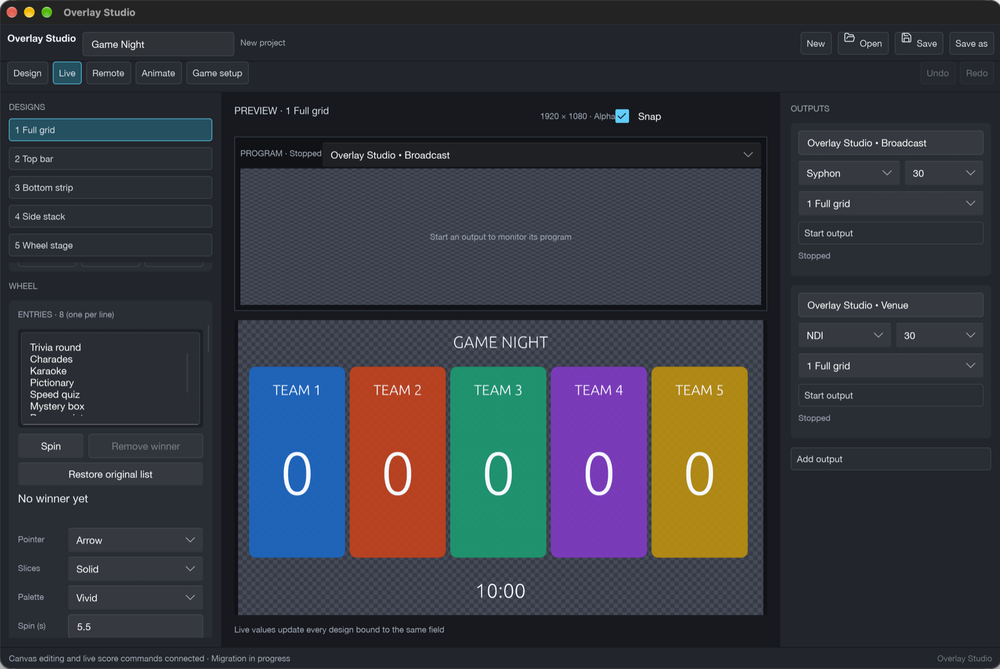
The Wheel panel in the Live tab.
8. Score effects and sounds
Every point added tints that team's tiles green, every point removed tints them black, then they ease back. Each layout has its own style (flash and pop, sweep, wipe, shake or sparkle burst). In Live › Effects and sound you can:
Choose the colors, how long the effect lasts and the overall volume.
Pick the sound for Point added, Point removed, Wheel spin, Wheel lands and Wheel remove. Press Test next to each to hear it.
Give a team its own sound under Per-team sounds (it overrides the global choice).
Import your own wav, mp3, ogg or flac files. Imported sounds are saved inside the project file.
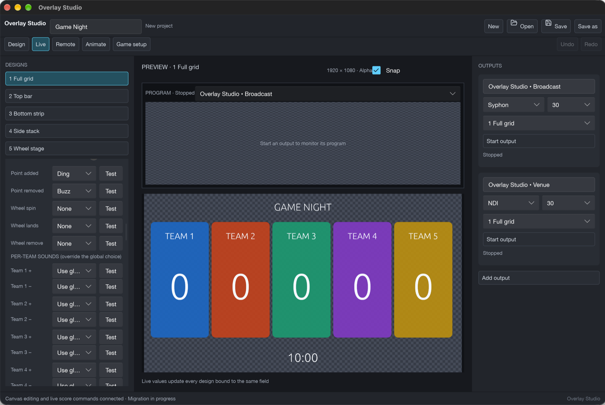
Sound pickers and per-team overrides.
Where the sound comes outOverlay Studio plays sounds from the Mac it runs on, through that Mac's normal audio output. NDI carries the picture only. Connect that Mac's audio output to your sound system (or mixer) and test it before doors open.
9. El Dado
El Dado is the dice round of the Bible competition. Each participant rolls a six-colour die, the colour decides how their question is answered, and the question appears on the audience screen. You run it from the Live tab, from the phone, or both.
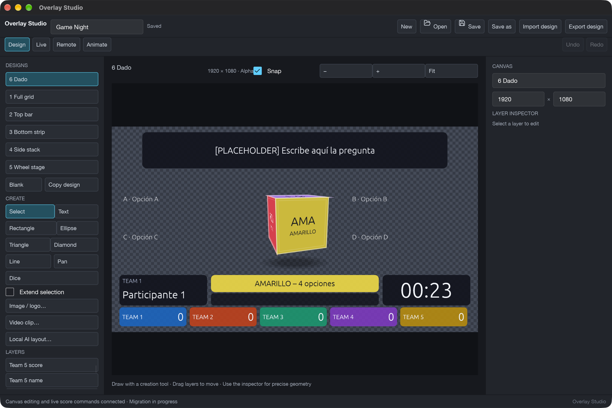
The 6 Dado design on a yellow roll: question on top, options A–D around the die, rule banner, turn card and 30 s clock. (Sample data, not real questions.)
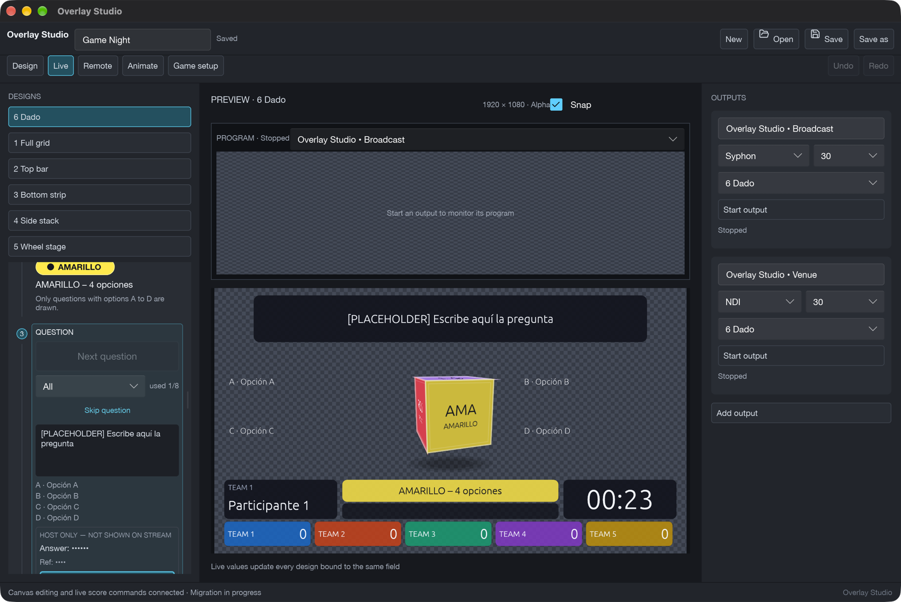
The Live tab: the El Dado panel in the left column runs the turn; the host-only answer is marked and never shown on the stream.
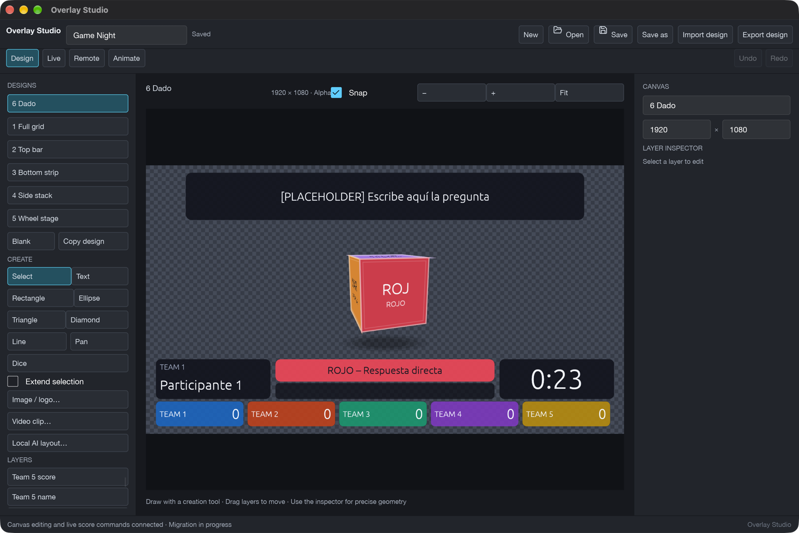
In Design, the Dice tool adds the die to any layout.
Load the questions
Start from the template examples/El Dado Questions Template.csv, found in the Overlay Studio project's examples folder. Replace the placeholder rows with your own questions. Each row has the columns book, reference, question, a, b, c, d, correct.
Save the file as CSV UTF-8 (in Excel or Numbers, choose that format). If a question contains a comma, the template shows how to put quotation marks around that cell.
In Live, find the El Dado section in the left column, open the question bank and click Import questions (CSV)…. The app says how many questions it loaded. If the file is refused, the app tells you why and keeps the questions it already has.
Used questions are remembered, so nobody gets the same question twice. Use the book filter to draw only from one book.
Set up the participants
In Game setup, type each team's participants under that team, one name per line, in the order they will play.
The El Dado section shows whose turn it is, for example Team 2 · Participant 3 of 5.
Take the 6 Dado design
Under Designs click 6 Dado, then Take design. It shows the die in the middle, the rule and the question, the timer, and the five team chips along the bottom.
Run a turn
Roll. Click Roll (on the desk or on the phone). The die tumbles and stops on a colour, and the rule for that colour appears.
Next question. Draws a question nobody has had yet. The question appears on screen. The A–D options appear only when the colour is AMARILLO.
Read it aloud. The correct answer and the reference show on your panel only. The audience never sees the answer.
Start 30 s when you finish reading. The clock counts down on screen.
Reveal answer when the participant has answered. Your panel shows the correct answer.
+10 to the current team if the answer was right. For a BLUE or ORANGE turn the points still go to the participant's team, even though someone else answered.
Next participant. Moves to the next name and clears the question and any PREGUNTA ANULADA message. The die keeps its last colour until the next roll.
If the clock reaches zero before anyone answers, the screen shows PREGUNTA ANULADA (question annulled). Move on to the next participant.
The six colours
Colour
Rule on screen
What to do
ROJO
ROJO – Respuesta directa
The participant answers directly. No options.
AMARILLO
AMARILLO – 4 opciones
The participant chooses from options A–D on screen.
AZUL
AZUL – Alguien del público
Pick someone from the audience to answer. Points go to the participant's team.
NARANJA
NARANJA – Alguien de tu equipo
Pick a teammate to answer for the participant. Points go to the team.
MORADO
MORADO – Con la Biblia
The participant may look up the answer in the Bible. The 30 seconds keep running.
VERDE
VERDE – PREGUNTA EXTRA
The app only shows the rule. Handle the extra question yourself.
Place the dice on any layout
Click the Design tab and open the design you want to change.
Add a layer with the Dice tool. It appears in the middle of the canvas and works like any other layer: drag it, resize it and set its opacity.
Pick the face colours and rule texts in the Dice inspector if you want to change them. One Dice layer per design is enough.
10. Control it from a phone
Click the Remote tab. The default Game controls layout already has score buttons for all five teams, plus Show… for each layout, Spin wheel, Remove winner and Restore wheel. The El Dado buttons are on the same layout: Roll dice, Next question, Reveal answer, Start 30 s, Next participant, +10 team and −10 team, plus Show 6 Dado. Next participant and −10 team ask you to confirm.
Pick the Mac's network address in Connect a device (use the one on your Wi-Fi) and click Start remote control.
On the phone, join the same Wi-Fi and scan the QR code that appears in the app. The controller opens in the phone's browser.
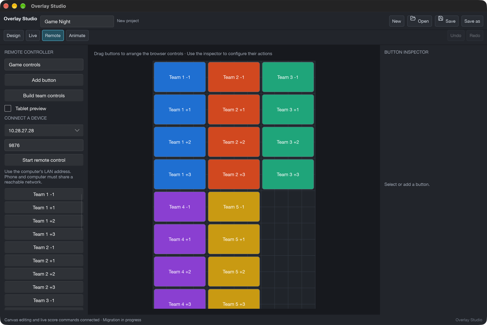
The Remote tab: the button layout is what appears on the phone.
Venue Wi-Fi that blocks devices from talking to each other (client isolation) will stop pairing. A small travel router for the media team solves it.
11. If something goes wrong
Problem
Try this
ProPresenter does not list the NDI source
Check the output says it is sending. Same Mac: enable Show Sources running on the local machine under NDI Input Discovery. Separate Macs: same network and subnet, wired if you can. Reopen the Device dropdown.
Scoreboard shows in ProPresenter but is hidden behind slides
See the layering note in section 5: use a Video Input element on the slide, or slides without a background.
Dark edges around the graphics
Untick Premultiplied for that input in Settings › Inputs.
Phone buttons change nothing on screen
The phone controls the first output. Make sure that output is the one sending NDI (section 4).
Phone will not pair
Same Wi-Fi as the Mac, and click Start remote control first. Check the Mac allowed local network access.
No sound
Press Test in Effects and sound. Check the Mac's output device and volume. Overlay Studio retries the audio device if it was unplugged.
You quit by accident
Reopen the app. It offers to recover unsaved work.